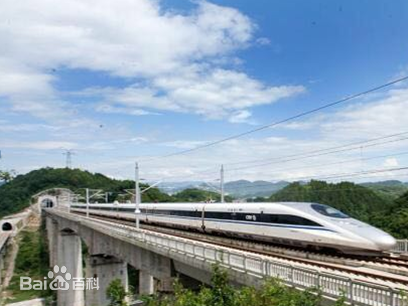
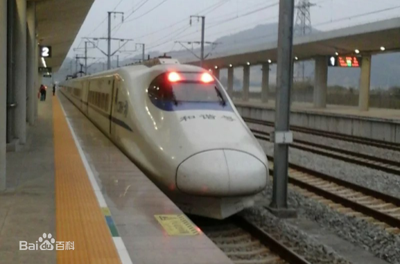
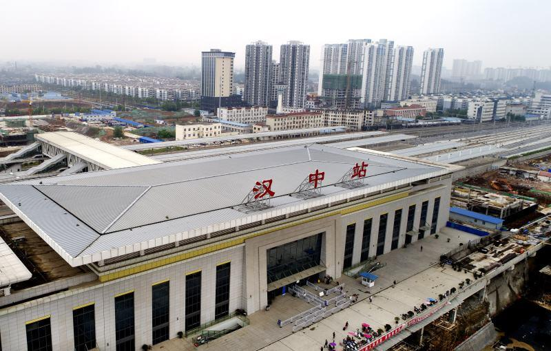

-
西成高铁
高铁，全称高速铁路，在不同国家不同时代有不同规定。欧洲早期组织即国际铁路联盟（UIC）1962年将旧线改造时速达200公里、新建时速达250~300公里的铁路定为高铁。当前各国新建的高速铁路大多把最高速度定位在250～350公里/小时 。1985年日内瓦协议做出新规定：新建客货共线型高铁时速为250公里以上，新建客运专线型高铁时速为350公里以上。中国国家铁路局的定义为：新建设计开行250公里/小时（含预留）及以上动车组列车、初期运营速度不小于200公里/小时的客运专线铁路 。
  